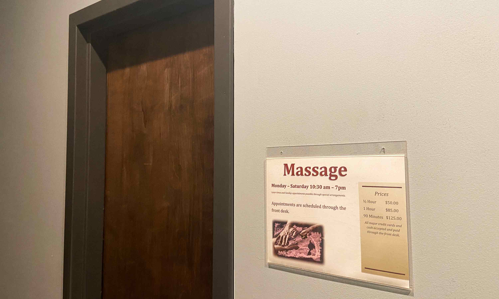
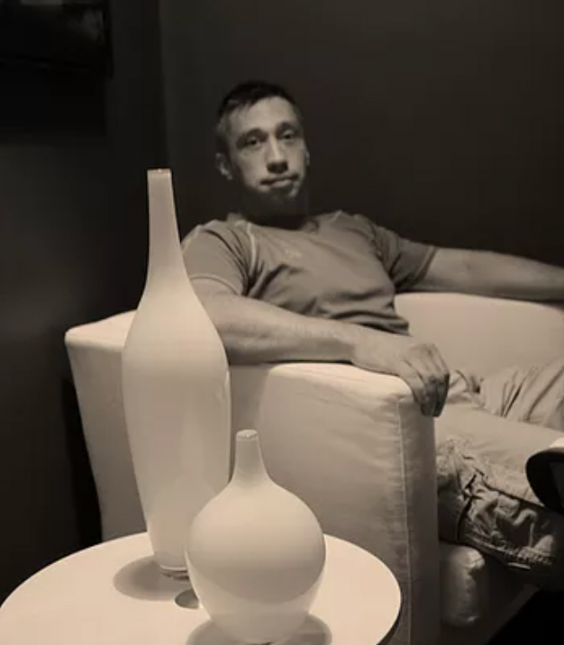

<ion-content [fullscreen]="true">
  <ion-grid class="ion-no-padding">
    <ion-row  class="ion-no-padding ion-no-margin">
      <ion-col size="12" class="ion-no-padding ion-no-margin">
        <ion-toolbar>
          <ion-buttons slot="end" class="ion-padding-end">
            <ion-menu-button color="light"></ion-menu-button>
          </ion-buttons>
           
        </ion-toolbar>
        <h1 #massage class="massage-title"><span class="trueno-outline-h1">GYM </span>
          <span class="trueno-h1">MASSAGE</span></h1>
        
      </ion-col>
      <ion-row>
        <ion-col size="12" class="ion-padding">
          <p>
            Atl Bodywork &amp; Massage is located inside Gravity Fitness, where you 
            can meet Edward Robinson, a fully licensed massage therapist. With his 
            expertise in Clinical Massage Therapy, he can help you rejuvenate sore 
            muscles, recover from a sports injury, or give you relief from your 
            stress-related tension. Choose from Swedish, Neuromuscular, Deep Tissue, 
            Sports, & European Kinesiology.
          </p>
        </ion-col>
      </ion-row>
    </ion-row>
    <ion-row>
      <ion-col size="12" class="ion-padding ion-text-center">
        <h1><span class="trueno-outline">MAKE </span>
          <span class="trueno">an APPOINTMENT</span></h1>
          <p>Visit Edward Robinson's website:<a href="https://www.atlbodyworks.com/" target="_blank">
             atlbodyworks.com</a>, or give him a call at 
            <span (click)=callMassage()>404-486-0506</span></p>
      </ion-col>
      <ion-col size="12" class="ion-text-center">
        
      </ion-col>
    </ion-row>
    <app-footer></app-footer>
  </ion-grid>
  
</ion-content>
